Product Inquiry (Sales)
Tel : +82-31-899-4503
+82-31-899-4504
+82-31-899-4507
Fax : +82-31-899-4509
sh_lee@crevis.co.kr
dkahn@crevis.co.kr
mysung@crevis.co.kr
GigE Vision Camera Manual
Sony Polarized CMOS Sensor USER MANUAL
MG-A500P-22 / MG-A121P-9
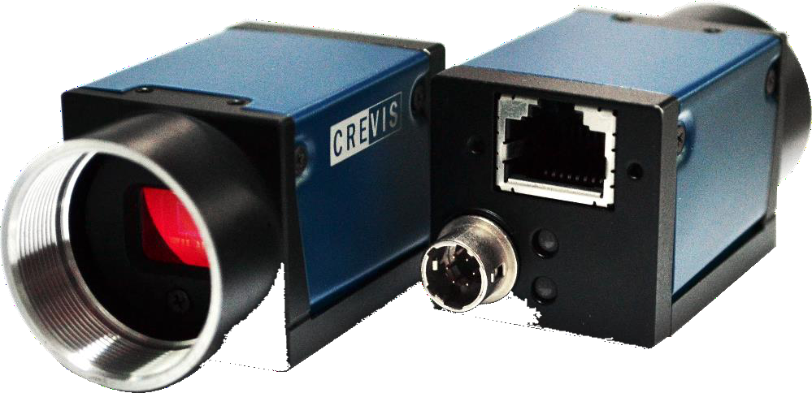
1) CPU: Intel Core i3 (minimum), i5 or higher (recommended)
2) RAM: 2GB or more (minimum), 8GB or more (recommended)
3) O/S: Windows 7 (32bit/64bit) or higher
4) LAN Card: Intel PRO/1000xT or higher
5) VGA: FHD support (minimum), UHD support or higher (recommended)
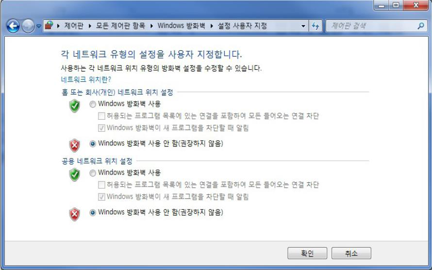
② Windows 8 or later: Start → Control Panel → Windows Defender Firewall → Turn Windows Defender Firewall on or off
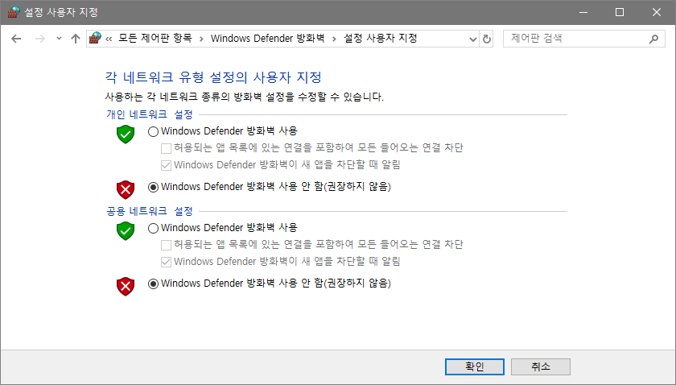
| Connecting power | Incorrect IP settings or Setting camera IP |
normal connection (Wait for image acquisition) |
Acquiring image (Top LED blinking) |
|---|---|---|---|
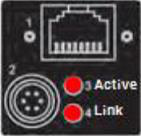 |
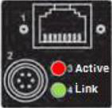 |
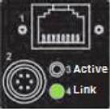 |
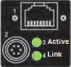 |
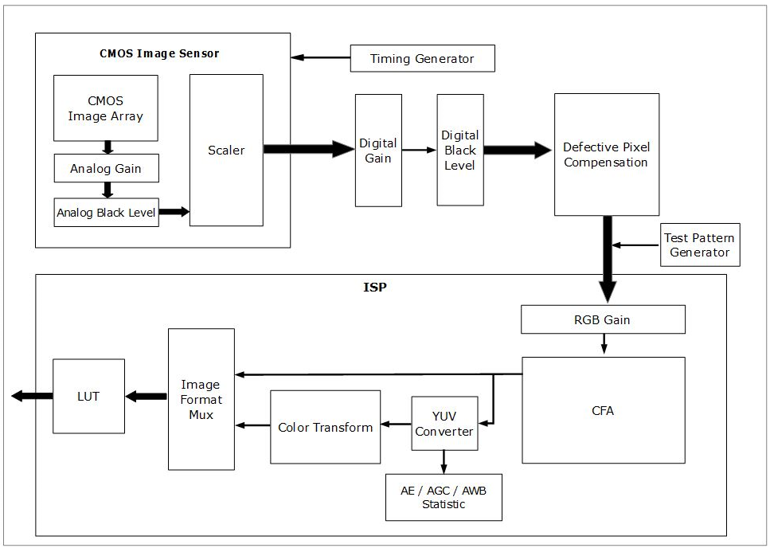
| Spec. | Detail | MG-A500P-22 | MG-A121P-9 |
|---|---|---|---|
| Sensor | 5M IMX250MZR |
12M IMX253MZR |
|
| Sensor Format | 2/3” | 1.1” | |
| Pixel Size(um) | 3.45 x 3.45 | 3.45 x 3.45 | |
| Active Pixels (10Tap) | 2464 x 2056 | 4112 x 3008 | |
| Pixel Clock | 74.219MHz | 74.219MHz | |
| Frame Rate (Max)* | 22fps (actual 21.79fps) | 9fps (actual 9.1fps) | |
| Exposure Time | 21.9us ~ 3sec (Expousre offset : 13.73us) |
35.85us ~ 3sec (Exposure offset : 14.28us) |
|
| Scanning Method | Full / ROI(Horizontal+Vertical) / Reverse(X,Y,All) | Full / ROI(Horizontal+Vertical) / Reverse(X,Y,All) | |
| Sync. System | Internal(Freerun), External, Software trigger via PC | Internal(Freerun), External, Software trigger via PC | |
| Trigger Mode | Timed, Trigger Width | Timed, Trigger Width | |
| Shutter | Global Shutter | Global Shutter | |
| Gain Abs | Analog : 0dB ~ 32dB (1x ~ 39.8x) Digital : 0dB ~ 24dB (1x ~ 16x) |
Analog : 0dB ~ 32dB (1x ~ 39.8x) Digital : 0dB ~ 24dB (1x ~ 16x) |
|
| Black Level | Analog : 0 ~ 4095(14bit) Digital : 0 ~ 4095(14bit) |
Analog : 0 ~ 4095(14bit) Digital : 0 ~ 4095(14bit) |
|
| Gamma | Gamma Correction (0~3.999), Adjustable LUT (12bit to 12bit) |
Gamma Correction (0~3.999), Adjustable LUT (12bit to 12bit) |
|
| Interface | Ethernet 1000 Base-T (GigE Vision Standard) | Ethernet 1000 Base-T (GigE Vision Standard) | |
| Pixel Format | Mono8/10/12, Mono10/12 Packed | Mono8/10/12, Mono10/12 Packed | |
| Minimum Illumination | 1.0 lx, F1.4, Gain MAX, without IR cut filter | 1.0 lx, F1.4, Gain MAX, without IR cut filter | |
| SNR | 36dB | 37dB | |
| Function Control | GainAuto, ExposureAuto, Acquisition Frame Rate(Adjustable), Line Debouncer, Noise Reduction Filter |
GainAuto, ExposureAuto, Acquisition Frame Rate(Adjustable), Line Debouncer, Noise Reduction Filter |
|
| Lens mount | C mount | C mount | |
| Optical accuracy | Optical center ≤ ± 0.1 mm | Optical center ≤ ± 0.1 mm | |
| Power Supply | DC 12V± 10% or PoE | DC 12V± 10% or PoE | |
| Consumption | DC 12V | < 3.4W | < 3.6W |
| PoE | < 3.85W | < 4.1W | |
| Weight | 60g | 60g | |
| Dimension | 29 x 29 x 40 ㎜ (Without mount, Connector) | 29 x 29 x 40 ㎜ (Without mount, Connector) | |
| Operating / Storage | 0℃ ~ +40℃ (with < 20~80% RH) / -10℃ ~ +50℃ | 0℃ ~ +40℃ (with < 20~80% RH) / -10℃ ~ +50℃ | |
| Vibration / Shock | 98 m/s² (10G) / 196m/s² (20G) | 98 m/s² (10G) / 196m/s² (20G) | |
| Standard Compliancy | CE (EN61326-1; 2006; Class A) | CE (EN61326-1; 2006; Class A) | |
| Environments | RoHS / WEEE |
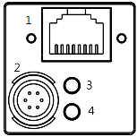
| NO. | Name | Remark |
|---|---|---|
| 1 | Ethernet Connector | RJ45 |
| 2 | Power & I/O Connector | 6Pin Circular |
| 3,4 | LED Indicator | LED |
* RJ45 Connector
| No. Name |
IN/OUT Description Remark |
|---|---|
| 1 DC 12V |
IN 10.8V ~ 13.2V Input Range |
| 2 TRIG_IN |
IN Opto-isolated Trigger Input+ (2.5V ~ 24V) |
| 3 STROBE_GND |
OUT Opto-isolated Strobe Output- |
| 4 STROBE_OUT |
OUT Opto-isolated Strobe Output+ |
| 5 TRIG_GND |
IN Opto-isolated Trigger Input- |
| 6 POEWR GND |
IN Power Ground |
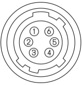
| LED (Link) | explanation | LED (Active) | explanation |
|---|---|---|---|
| Off | Power off | Off | standby state |
| Red | 10MB/100MB link | Red | IP allocation, IP setting error |
| Green | Gigabit link | Green Green |
When lit (waiting for trigger input) When blinking (image transmission) |
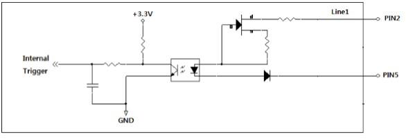
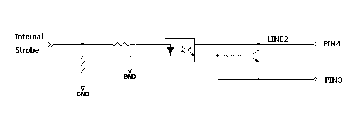
This function allows you to monitor various conditions of the camera or control the status of the device.
| Item | Setting Value | Description |
|---|---|---|
| Device Max Throughpu | (Integer) | Defines the maximum bandwidth of the camera transmitter. This is the camera's Affects maximum Frame Rate. |
| Device Temperature | Command | Measures the camera's internal temperature. |
You can define the maximum bandwidth of images transmitted from the camera to the host. It can be changed in Byte/Sec units.
This function monitors the current temperature of the parts selected in ‘Device Temperature Selector’. The moment you execute ‘Temperature Update Selector’, temperature information is immediately returned as a Celsius (℃) value including decimal points.
This is a function that allows you to change the settings for the camera's image output size and format.
| Item | Setting Value | Description |
|---|---|---|
| Width, Height, Offset X, Offset Y |
(Integer) | Change the output size and offset (pixel coordinates) of the image. WidthMAX ≥ Offset X + Width HeightMAX ≥ Offset Y + Height |
| ReverseX, ReverseY |
True / False | This is the function to flip the image up/down or left/right. |
| Pixel Format | Mono8/10/12 Mono8/10 Packed |
You can change the format when transmitting images to the host. Please refer to Section 4.2.3 for detailed transmission order. |
| Test Pattern | Off, Vertical Ramp, Horizontal Ramp |
You can select a test image. |
By setting Width, Height, Offset X, and Offset Y, only the desired image area can be output.
As the output image size gets smaller, the frame rate increases.
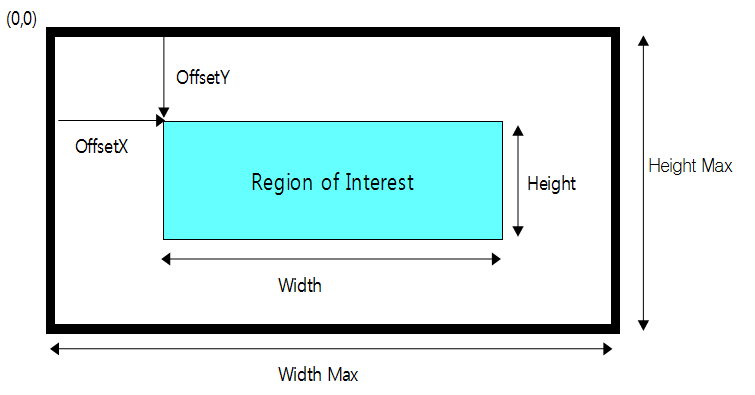
Note
1) Frame Rate changed due to ROI can be checked through the ‘Resulting Frame Rate’ parameter.
This is a function that reverses the left/right or top/bottom of the video and outputs it. In the case of the color model, the image is output with the ‘Bayer Pixel Order’ changed according to the ‘Reverse Mode’.
1) When Reverse (Bayer RG → Bayer GR)
2) When Reverse Y mode is set to True, the top/bottom of the video is reversed. (Bayer RG → Bayer GB)
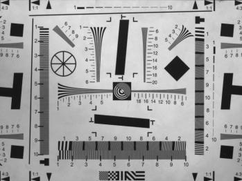
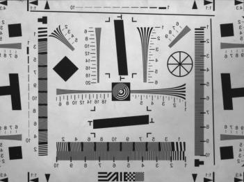
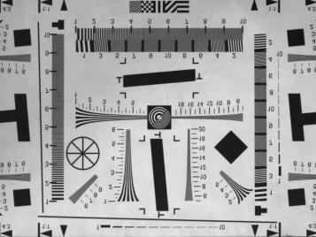
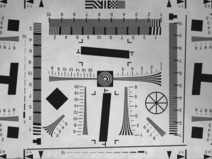
Note
1) When 'Reverse Y' is selected, defective pixels may appear because the use of Defect Filter is limited. Because of this
Exposed defective pixels can be removed in the ‘Defect Pixel Correction’ category. (Refer to the ‘Defect Pixel Correction’ section) 2) If ROI and Reverse are used simultaneously, the ROI function is applied from the reversed image. As shown in the picture below, when Reverse is activated, the position of (0,0) Pixel, which is the starting coordinate of the Image, is reversed. For this reason, in order to capture the same area as before applying Reverse, an Image Offset equal to Total Size - ROI Size is required.
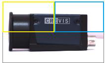
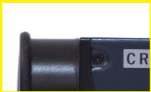
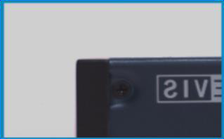
This is a function that allows you to change the pixel format of the video. Because there is a difference in the amount of image data transmitted for each pixel format, the transmission speed and bandwidth may vary.
| Mono8 | Mono10 |
|---|---|
| 8-bit image data into 8bits Descrpition : 8-bit monochrome unsigned Pixel Size : 1byte Pixel Value range : 0 to 255  |
10-bit image data into 16-bits Description : 10-bit monochrome unsigned Pixel Size : 2byte Pixel Value range : 0 to 1023  |
| Mono12 | 12-bit image data into 16-bits Description : 12-bit monochrome unsigned Pixel Size : 2byte Pixel Value range : 0 to 4095 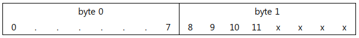 |
|---|---|
| Mono10 Packed | 2 X 10-bit data packed into 24bits (Y1, Y2) Description : 10-bit packed monochrome unsigned Pixel Size : 3 bytes for two pixels Value range : 0 to 1023 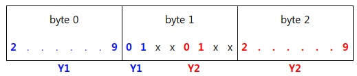 |
| Mono12 Packed | 2 X 12-bit data packed into 24bits (Y1, Y2) Description : 12-bit packed monochrome unsigned Pixel Size : 3 bytes for two pixels Value range : 0 to 1023 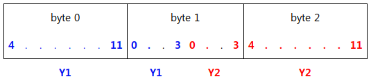 |
At the intermediate stage of image processing, the image is replaced with a test pattern and transmitted. Even if the Test Pattern function is activated, functions related to image acquisition such as ROI size, trigger input, and ‘Acquisition Frame Rate’ are valid. Test Pattern images are created in 8bit gray level (0~255DN).
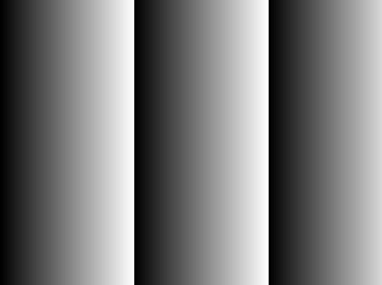
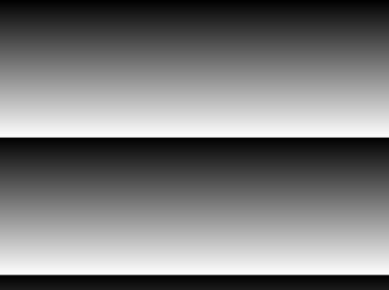
* Ramp size may vary depending on pixel format.
Note
※ When 8bit is set: Ramp Size = 256 Pixel
Note
※ When setting 10bit: Ramp Size = 1024 Pixel
Note
※ When 12bit is set: Ramp Size = 4096 Pixel
This is a function that allows you to set the method of acquiring images from the camera. You can define the number of image frames to acquire.
| Item | Setting Value | Description |
|---|---|---|
| Acquisition Mode | Continuous, Single Frame, Multi Frame |
Acquires images from the Acquisition Start command until the conditions below are met. - Continuous: Acquisition continues until Acquisition Stop. - Single Frame: Acquires only one image. - Multi Frame: Acquires only as many images as the set count. |
| Acquisition Start | Excute | Command to start image acquisition |
| Acquisition Stop | Excute | End image acquisition Command |
| Acquisition Frame Count | 0 to 255 | Number of images to be transmitted in Burst from the point of Acquisition Start. |
1) Single Frame
Each time the ‘Acquisition Start’ command is input, one image is captured and transmitted. Since acquisition stops automatically after transmitting only one image, a separate ‘Acquisition Stop’ command is not required.
If ‘Trigger Mode’ is ‘On’, the light is exposed and transmitted by the trigger. When Trigger Mode is ‘Off’, new images can be acquired and transmitted with only the ‘Acquisition Start’ command.
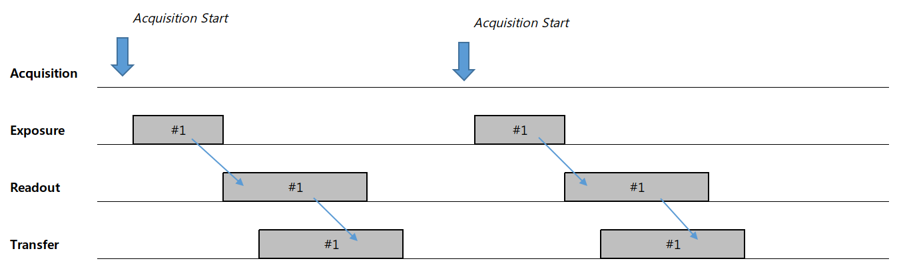
2) Multi Frame & Acquisition Frame Count
Each time the ‘Acquisition Start’ command is input, images are captured and transmitted as many as defined in ‘Acquisition Frame Count’. A separate ‘Acquisition Stop’ command is not required because acquisition stops automatically after transmitting the specified number of images. However, if the ‘Acquisition Stop’ command is input during grab, it stops after reading and transmitting the frame being exposed. If ‘Trigger Mode’ is ‘On’, it is exposed and transmitted by the input trigger.
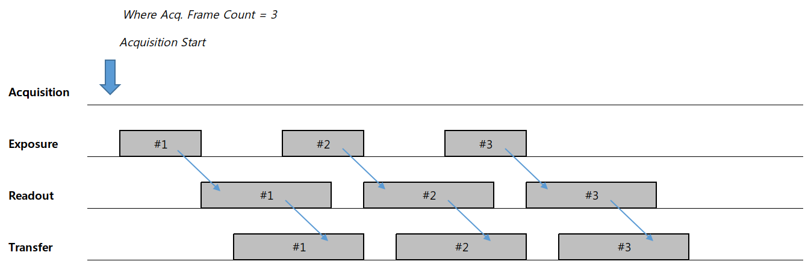
3) Continuous
From the time the ‘Acquisition Start’ command is input, images are captured and transmitted at the cycle defined in ‘Acquisition Frame Rate’. If the ‘Acquisition Stop’ command is entered during grab, the currently exposed image will be read out and transmitted, and then acquisition will be stopped. If the ‘Acquisition Stop’ command is entered at the end of exposure, acquisition will end after the ongoing readout is completed. If ‘Trigger Mode’ is ‘On’, the light is exposed and transmitted by the trigger.
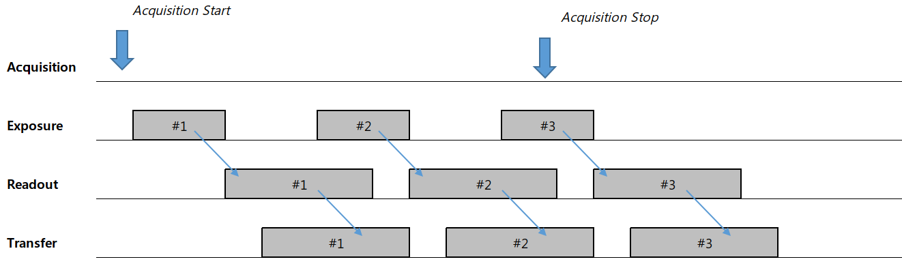
Controls image acquisition and output timing. Image acquisition methods largely include external synchronization (Trigger Mode = On) and internal synchronization (Trigger Mode = Off, Free-run Mode) modes, and acquisition delay or transmission delay can be set.
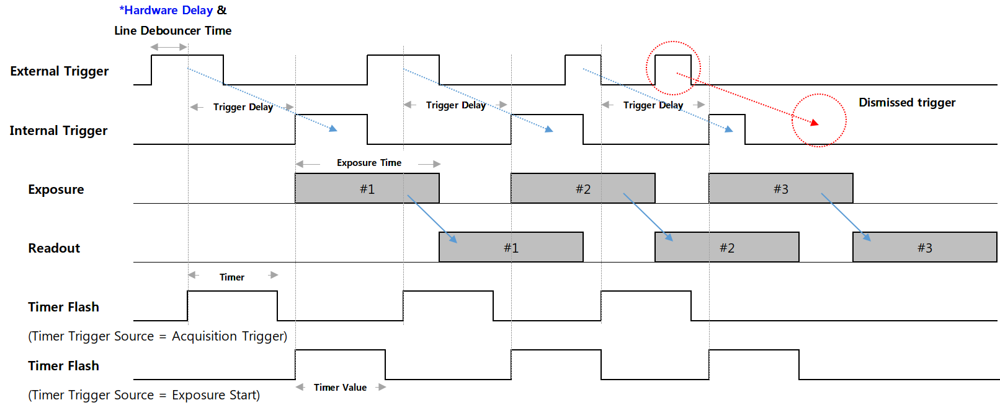
* Hardware Delay
| Rising edge | Falling edge | |
|---|---|---|
| Opto-isolated Input | 4.5 us | 35 us |
| Item | Setting Value | Description |
|---|---|---|
| Trigger Mode | Off, On | Off: The camera operates in Free-run mode and generates an internal trigger signal. The internal trigger period is determined by ‘Acquisition Frame Rate’. If ‘Acquisition Frame Rate Enable’ is Off, the camera operates at the maximum frame rate available under the current camera settings. On: The camera operates in Trigger Mode. The trigger is generated by hardware (Line1) or a software trigger command. |
| Resulting Frame Rate |
(Read Only) | Shows the Frame Rate when Trigger Mode is set to Off. Image size and ‘Acquisition Frame Rate’, ‘Exposure Time’ and ‘Pixel’ It is determined by ‘Format’, ‘Decimation’, etc. |
| Trigger Source | Line1, Software | Selects the trigger source to use as the trigger input. For details, refer to the Trigger Source section below. |
| Trigger Delay | 0 to 57,844,677 (Unit : us) |
From the trigger received by the camera to the exposure of the image sensor Define the delay time. Setting value 0 means Delay Off. Please refer to the Trigger Delay section below for details. |
|---|---|---|
| Transfer Delay | 0 to 57,844,677 (Unit : Clock) |
Defines the delay time applied at the final transmission stage for the image read from the sensor. This is valid only when ‘Low Latency Mode Enable’ is ‘False’. For details, refer to the Transfer Delay section below. |
| Trigger Activation | Rising Edge (Read Only) |
Defines the standard for the phase of the trigger signal inside the camera. of input trigger To change the phase, use ‘Line Inverter’. |
| Line debouncer Time |
0 to 882.995 (Unit : us) |
Adjust Line Debouncer Time. For details, see the Line Debouncer section below. |
‘Trigger Mode’ is a function that controls the exposure of the image sensor.
If ‘Trigger Mode’ is set to ‘Off’, the camera operates in Free-run Mode. In Free-run mode, an Internal VD is created at the maximum frame rate that can operate with the current settings. At the same time, an exposure signal is generated for the set ‘Exposure Time’ and input to the image sensor. Periodic exposure is performed by the generated exposure signal, and the exposed image is read and transmitted to the host.
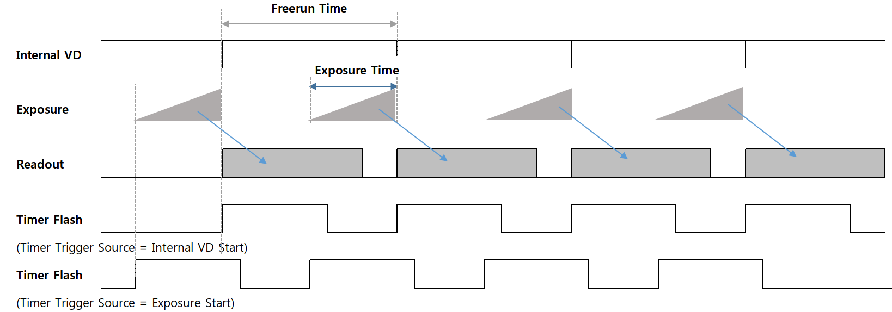
On the other hand, if Trigger Mode is set to 'On', the camera operates in Trigger Mode. In trigger mode, the exposure start point or exposure time is determined by the external trigger input. After exposure is completed, frames are read and transmitted in the same way as in Free-run mode. For detailed timing, refer to p.22 <Timing Diagram of Trigger Signals>.
Note
1) If a trigger signal with a cycle faster than the product's maximum frame rate is input, the sync of the output image may be damaged. (For abnormal trigger input detection, refer to ‘Counter Control’.) Therefore, input signals that comply with the camera specifications.
2) If noise enters the trigger signal line, the camera may mistake the noise for a trigger signal. (Refer to the ‘Line Debouncer Time’ function for noise filtering.)
Define the source of the trigger signal. Applies when Trigger Mode is set to On.
Note
If you set ‘Counter Selector’ in the ‘Counter And Timer Control’ category to ‘Line Trigger’, the total number of valid triggers entered by the camera will be returned as ‘Counter Value’. This counter is initialized to 0 by the ‘Acquisition Start’ command.
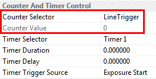
This function delays trigger operation inside the camera by the value set in 'Trigger Delay' from the trigger input point. If 'Trigger Delay' is set to a value other than 0 and a new trigger signal is input while the existing trigger is delayed, the existing trigger delay continues and the new trigger is ignored. In other words, if the delay time is longer than the trigger period, the frame rate may decrease because triggers are missed. For the detailed timing diagram, refer to P.23 <Timing Diagram of Trigger Signals>.
This is a function that delays the start of image packet transmission during the stage of transmitting images that have completed image pre-processing inside the camera. When multiple camera videos are input from a single host, the input timing can be adjusted to distribute the input points.
Since the input value of the parameter is in Clock units, refer to the formula below to convert to time.
𝑇𝑟𝑎𝑛𝑠𝑓𝑒𝑟 𝐷𝑒𝑙𝑎𝑦(𝑛𝑠) = 𝑇𝑟𝑎𝑛𝑠𝑓𝑒𝑟 𝐷𝑒𝑙𝑎𝑦 𝑉𝑎𝑙𝑢𝑒 × 10𝑛𝑠
Note
1) This can only be set when the ‘Low-latency Mode Enable’ parameter is set to ‘False’.
2) For more detailed timing, please refer to the ‘Low-Latency Mode’ section.
This function allows the camera to select the exposure method. If ‘Trigger Source’ is set to ‘Line1’, ‘Timed’ and ‘Trigger Width’ can be set respectively. However, if ‘Trigger Source’ is set to ‘Software’, it only operates as a ‘Timed’ shutter.
In the ‘Timed’ shutter method, exposure occurs only for the time set in ‘Exposure Time’. The trigger simply specifies when to start the exposure. On the other hand, in the ‘Trigger Width’ shutter method, the pulse width of the trigger signal becomes the effective exposure time.
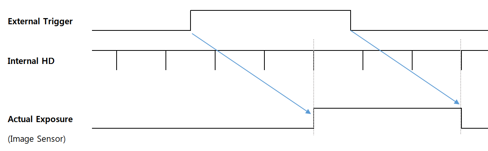
Set the camera exposure time. This time only applies when ‘Exposure Mode’ is set to ‘Timed’. In Free-run Mode, if the Exposure Time becomes longer than the Frame Period, the Frame Rate decreases.
The actual exposure signal inside the camera is generated by the ‘HD’ timer. Since this ‘HD’ timer is related to the readout size in the horizontal direction, generally, the smaller the Image Width, the shorter the period of the HD signal. Additionally, when changing parameters related to video transmission bandwidth (ex. Pixel Format, Device Link Throughput Limit, etc.), the period of the HD signal changes.
Note
If you set ‘Counter Selector’ in the ‘Counter And Timer Control’ category to ‘Exposure Start’ or ‘Exposure End’, the camera will return the start and end counts of exposure as ‘Counter Value’. This counter is initialized to 0 by the ‘Acquisition Start’ command.
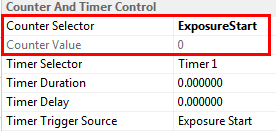
Note
1) In GigE polarization cameras, there is an error between Exposure Time and actual exposure time. Specified in the table below
Time is absolute time and is the additional exposure time when exposing each frame.
| Model | MG-A500P-22 | MG-A121P-9 |
|---|---|---|
| Exposure Time Offset | 13.73us | 14.26us |
2) Exposure start (and exposure end) may be delayed by up to 3HD from the time the trigger signal reaches the camera. (Excluding hardware delay and ‘Line Debouncer Time’)
| Delay Type | Delay Time | |
|---|---|---|
| Exposure Start Delay | 2HD | |
| Exposure End Delay | 2HD |
This is a function that allows the camera to automatically adjust ‘Exposure Time’ to maintain the desired brightness.
Can be set when ‘ExposureMode’ is set to ‘Timed’. And ‘Exposure Time’ changes only in the time between ‘Auto Exposure Time Lower Limit’ and ‘Auto Exposure Time Upper Limit’.
| parameters | Setting value | explanation | ||
|---|---|---|---|---|
| Exposure Auto | Off Once Continuous |
Off: Set exposure time manually. Once: Adjust the exposure time just once to change the brightness value to the desired value. Continuous: Continuously adjusts the exposure time to achieve the desired brightness value. Maintain. |
||
| Auto Exposure Target | 0 to 255 (8-bit DN) |
Set the brightness value desired by the user | ||
| Auto Exposure Time Lower Limit |
Unit : us | Minimum value of variable shutter range | ||
| Auto Exposure Time Upper Limit |
Unit : us | Maximum value of variable shutter range |
Note
1) If the Exposure Time is too short, a flickering image may be output due to the flickering of the lighting.
2) If ‘Exposure Time’ becomes longer than Frame Time to reach maximum brightness, Frame Rate may decrease.
This function allows you to set camera external I/O signals. The input/output direction of each I/O is fixed, and the logical specifications of signals through the I/O port can be changed.
| Item | Setting Value | Description |
|---|---|---|
| Line selector | Line1, Line2 | Select the Line for which you want detailed settings. |
| Line debouncer Time |
0 to 882.995 (Unit : us) |
Adjust Line Debouncer Time. For details, see the Line Debouncer section below. |
| Line Mode | Input, Output | Line 1 is assigned to the camera's input line. Line 2 is assigned to the camera's Output Line. |
| Line Inverter | True / False | True: Inverts the input/output phase of the line. False: Do not invert the phase of the line. |
| Line Status | True / False | Returns the current status of the selected Line. True means Logical High And False means Logical Low. |
| Line Source | Exposure Active, Timer Active, User Output1 |
Available only when ‘Line Selector’ is set to ‘Line2’ (Output Direction). Exposure Active: Outputs a flash signal active during the exposure time. Timer Active: Outputs a flash signal for the time set in ‘TimerDuration’ in the ‘Counter And Timer Control’ category. User Output1: Outputs the ‘User Output Value’ value. |
| User Output Value | True / False | Sets the output value when ‘Line Source’ is set to User Output1. |
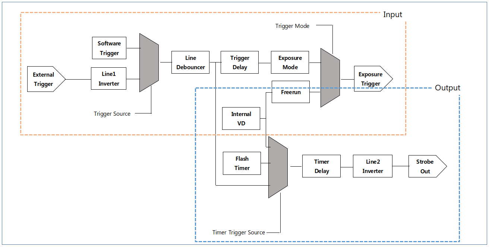
This is a function to remove (debouncing) chattering noise from the camera's external trigger line. Only signals that maintain the state for the time set in ‘Line Debouncer Time’ are accepted as valid inputs. Since the Line Debouncer Timer checks the state transition of the Trigger Line, it receives a trigger delayed by the time set in ‘Line Debouncer Timer’.
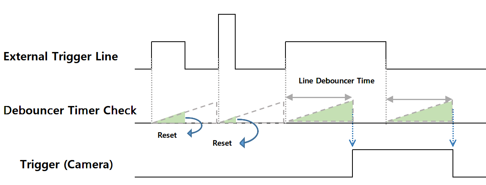
Timer Control allows you to change the settings of the strobe signal output from the camera. When 'Trigger Mode' is Off (Free-run Mode), the Timer Flash signal generation point can be selected as Exposure Start or 'Internal VD Start'. (Refer to <Timing Diagram of Free-run Mode>.) Since this point is earlier than the shutter operation point, a Timer Delay may be required to synchronize with the lighting.
On the other hand, when 'Trigger Mode' is On, the Timer Flash generation position can be selected as the exposure start point or trigger signal detection point (state transition point). If the Timer is generated by an external trigger, 'Timer Delay' can be used to synchronize with the actual exposure section. (Refer to <Timing Diagram of Trigger Signals>.)
| Item | Setting Value | Description |
|---|---|---|
| Timer Duration | 0 to 57,844,677 (Unit : us) |
Defines the pulse width of the Timer Flash signal output to Line2. new year The default value of 0 means Off. |
| Timer Delay | 0 to 57,844,677 (Unit : us) |
Defines the delay time for the Timer Flash signal output to Line 2. new year A default value of 0 means no delay. |
| Timer Trigger Source | Exposure Start, Acquisition Trigger, Internal VD Start |
Choose when the Flash Timer begins to fire. Exposure Start: When exposure begins Acquisition Trigger: Input point of external trigger Internal VD Start: Internal VD reset point in Free-run mode |
This is a function that allows you to monitor the series of processes in which the camera receives trigger input, exposes, and transmits images with a step-by-step counter. It is also possible to check for signal input that exceeds camera specifications, such as trigger input with a cycle faster than the frame speed.
| Item | Setting Value | Description |
|---|---|---|
| Counter Selector | LineTrigger Exposure Start Exposure End FrameEnd ExposureOver- Trigger ReadOutOver- Trigger |
Monitors whether the camera operates in response to a trigger signal input from an external source. is a function. LineTrigger: Total number of input Line1 Triggers and Software Triggers. Exposure Start: The number of times the actual exposure started. Exposure End: The number of times the actual exposure has ended. FrameEnd: Number of frames read out from the sensor. ExposureOverTrigger: Number of new triggers entered during Exposure. ReadOutOverTrigger: Number of times a new Exposure is completed during Readout. However, Readout Overtrigger is counted only when Trigger Mask Enable = On. |
| Counter Value | (Read Only) | All counters at the time of ‘Counter Value Reset’ command input or Acquisition Start Values are initialized to 0. |
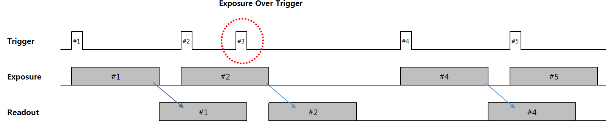
1) When Exposure Mode = Timed
2) #3 Trigger signal is ignored because it was input during exposure of #2 Trigger signal.
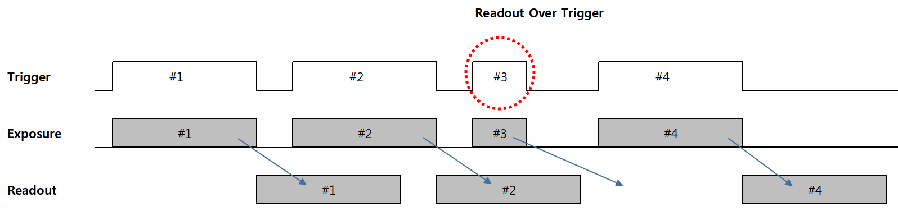
1) When Exposure Mode = Trigger Width
2) #3 Trigger signal was input with a cycle faster than the minimum cycle of the camera. So the camera is #3
The trigger is treated as a bad trigger and the image of #2 is transmitted without stopping.
Event notification is a function that sends an event packet from the camera to the host in each specific event situation. Since the Event Packet is transmitted through a different channel from the image transmission channel, simultaneous transmission with the image packet is possible.
| Item | Setting Value | Description |
|---|---|---|
| Event Selector | Exposure End, Over Trigger Start Missed Over Trigger End Missed |
Exposure End: When an event occurs at the end of exposure Turn it on. Over Trigger Start Missed: A new error occurs during exposure due to a trigger. An event occurs when a new trigger is input. Over Trigger End Missed: Image by Trigger If exposure ends due to a new trigger during readout, An event occurs. |
| Event Notification |
Off, On | Activate or deactivate notifications for events of each selector It sanctifies. |
You can change the analog and digital characteristics of the video signal. It mainly lists functions that can change the properties of image pixels.
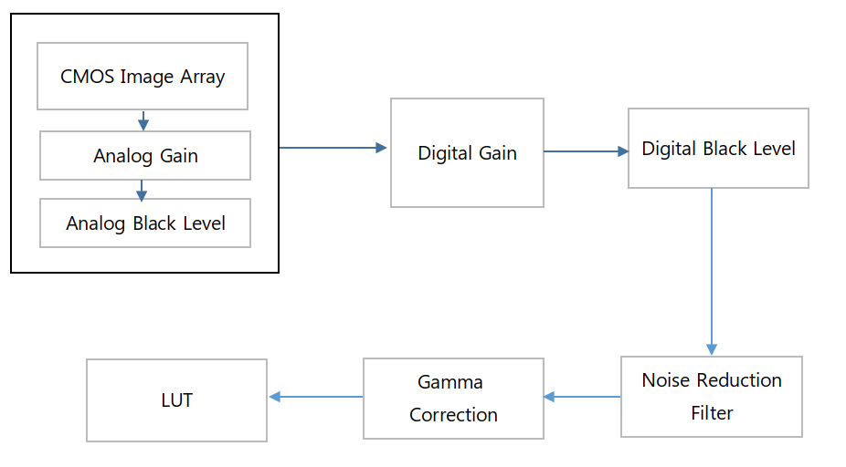
| Item | Setting Value | Description |
|---|---|---|
| Gain Selector | All, DigitalAll | Select the Gain to be set. Each of the two gains is independent of each other With Gain, you can set different values at the same time. - All : Analog Gain - Digital All : Digital Gain |
| Gain Raw | All : Analog Gain - Global Shutter : 0 to 480 - Rolling Model : 0 to 270 DigitalAll : Digital Gain (Common) 0 to 8191 |
You can apply the desired gain as a raw value. |
| Gain Abs | All : Analog Gain - Global Shutter : 1 to 251x - Rolling Model : 1 to 22.39x DigitalAll : Digital Gain (Common) 1 to 8.99x |
You can apply the desired gain value as a multiplier. Brightness of original image You can enter a relative magnification by specifying 1x. ※ Reference: dB conversion formula Gain_dB = 20 * log(GainAbs) |
| Gain Auto | Off, Once, Continuous | You can set the AGC (Automatic gain control) function. At this time Target brightness value is defined in ‘Auto Exposure Target’. Off: Set Gain manually. Once: Adjust the gain value just once to the desired brightness value. Change. Continuous: Continuously adjust the gain value to achieve the desired brightness value. Maintain. |
| Auto Gain Lower Limit |
Unit : dB | Minimum value of variable gain range |
| Auto Gain Upper Limit |
Unit : dB | Maximum value of variable gain range |
| Black Level Selector |
All, DigitalAll | Select the Black Level to set. Each of the two BlackLevels is As an independent Offset, different values can be set at the same time. - All : Analog Offset - Digital All : Digital Offset |
| Black Level Raw |
All : Analog Offset -Global Shutter : 0 to 255 -Rolling Model : 0 to 255 DigitalAll : Digital Offset (Common) 0 to 1023 |
Change the Analog / Digital Black Level value. You can adjust the DC Offset of the image signal. |
|---|---|---|
| Noise Reduction Filter |
False, True | Activate the Noise Reduction function. Sharpness may decrease slightly You can. |
While Gain can change the sensitivity of the image without deteriorating the frame rate, image noise can also increase. The camera’s gain consists of Analog Gain and Digital Gain, respectively, and can be selected through ‘Gain Selector’.
Note
Priority for brightness changes when ‘Gain Auto’ is used simultaneously with the ‘Exposure Auto’ function
‘Black Level’ is a function that allows you to set the offset of the camera’s sensitivity. ‘Black Level’, like Gain, consists of Analog Black Level and Digital Black Level and can be selected through ‘Black Level Selector’.
This function is used to adjust Gamma Correction. You can correct the contrast of camera images.
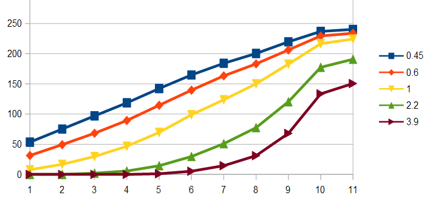
Note
This function allows you to reduce video noise through a noise filter. When activated, it is reflected from the next frame and the sharpness of the image may be slightly reduced.
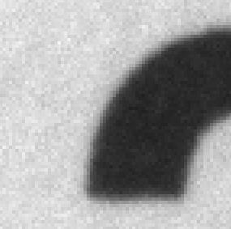
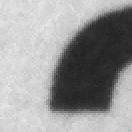
The LUT (Look Up Table) function is a function that converts digitally converted pixel values into a table by matching them 1:1 with the input value and output value. Pixel values are replaced with the LUT Value (Output Image) defined for each Index (Input Image) in the Table. For color models, the luminance component is loaded into the LUT memory.
| Item | Setting value | Description |
|---|---|---|
| LUT Enable | Disable, Enable | Determines whether to activate the LUT function. |
| LUT Index | 0 to 4095 | Adjust the Index value of the LUT. This is the input pixel value of the table. |
| LUT Value | 0 to 4095 | Adjust the value of the corresponding LUT Index. Table's output pixel value no see. |
Ex) When using a table with values in the form of y=2x, low-light pixels can see an improvement in sensitivity, while high-light pixels become saturated, resulting in loss of dynamic range.
| Index | 0 | 1 | 2 | 3 | 4 | 5 | … | 1024 | … | 2047 | 2048 | … |
|---|---|---|---|---|---|---|---|---|---|---|---|---|
| Value | 0 | 2 | 4 | 6 | 8 | 0xA | … | 0X800 | … | 0xFFE | 0xFFF | 0xFFF |
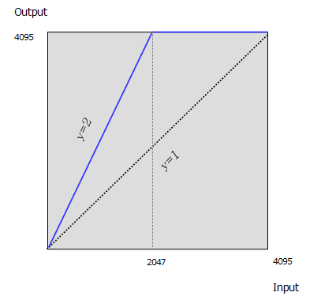
Note
This function allows you to manage the camera’s defect pixels. At the time of shipment, corrections are made for defective pixels. However, the user can compensate by additionally defining pixels that he or she considers to be bad pixels. Up to 128 bad pixels for each camera can be stored in Flash PROM.
| Item | Setting Value | Description |
|---|---|---|
| Defect Filter Enable | False, True | Select whether to correct Defect Pixel. |
| Defect Filter Test Mode Select |
Off, Mark White, Mark Black, Mark White with Black Background |
This is an option to display corrected defect pixels in the video. |
| Defect Pixel Replacement Count |
1 to 256 | This is the number of defective pixels to be corrected per camera. |
| Defect Pixel Index | 0 to 255 | Index of the defect pixel to be corrected. |
| Defect Pixel X Coordinate | 0 to WidthMax - 1 | Enter the X-axis coordinate value of the pixel to be corrected. Image Pixel Coordinates start from 0. |
| Defect Pixel Y Coordinate | 0 to HeightMax - 1 | Enter the Y-axis coordinate value of the pixel to be corrected. Image Pixel Coordinates start from 0. |
| Defect Pixel X Replacement |
Excute | The entered correction values are immediately applied to the camera. |
Note
| Defect Pixel Replacement Count |
Defect Pixel Index | X Coordinate | Y Coordinate |
|---|---|---|---|
| … … |
… | … | |
| 19th 18 |
… | … | |
| 20th 19 |
… | … | |
| 21th | 20 | 156 | 1131 |
| 22th | 21 | 208 | 611 |
Factory Defined +1 User Defined 1 +1 User Defined 2
This function is used to save or load the values of parameters set by the user.
| Item | Setting value | Description | ||
|---|---|---|---|---|
| User Set Selector | Default Userset1 Userset2 Userset3 |
Default: Settings saved in the camera as default. user Cannot save. User Set1/2/3: Users can save/load arbitrarily. Power Off/On The saved settings will also be maintained. |
||
| User Set Load | Execute | Retrieves the settings of the selected User Setselector item. | ||
| User Set Save | Execute | Saves the settings in the selected User Setselector item. |
You can select a method to load and read image data pre-processed in the FPGA into an Image Buffer (Frame Buffer) of approximately 512MB. The initial value is ‘Low-latency Mode Enable’ is ‘True’. This is a method of transmitting images as soon as the Packet Size is entered into the Buffer. On the other hand, if ‘Low-latency Mode Enable’ is set to ‘False’, it becomes ‘Full-Block Mode’ and all image frames must be buffered before transmission.
The time and timing for imaging, readout, and preprocessing are the same for both modes, but the timing for starting transmission to the host is different. In other words, there is a difference in the total time required from trigger input to host reception.
| Low-Latency Mode | Full-Block Mode | |
|---|---|---|
| Low-Latency_Mode_Enable Parameter |
True | False |
| When to start transmission | When loaded as per packet size | When loading all frames |
| Transfer Delay availability | Not available | available |
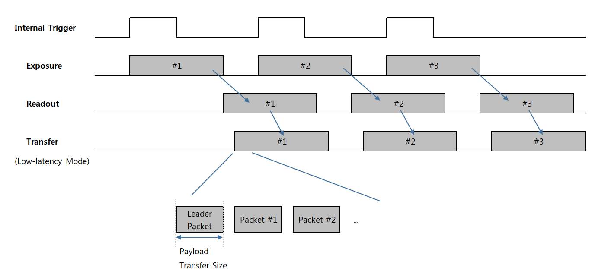
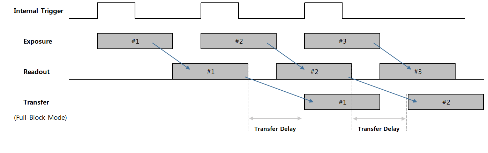
If the host needs to receive video input from multiple cameras, the best way is to use a multi-port host card with a dedicated chipset attached to each port. If not, the packet transmission of each camera must be distributed so as not to exceed the maximum bandwidth of the host (receiver). For example, by applying different ‘Transfer Delays’ in ‘Full-Block Mode’, the image transmission time can be distributed. In this case, the host receives images sequentially.
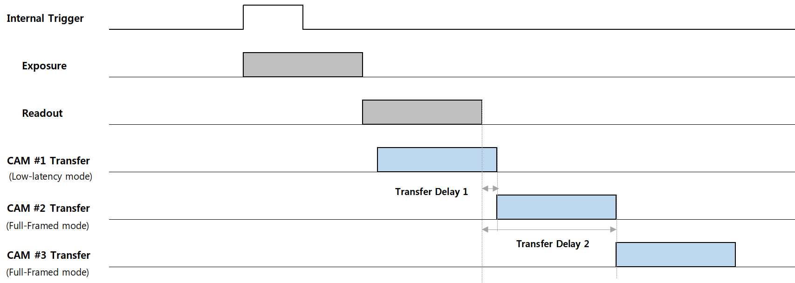
Note
1) The ‘Low-latency Mode Enable’ parameter is applied immediately when changed. However, it must be changed while Acquisition is stopped.
2) The ‘Transfer Delay’ function can only be set when ‘Low-latency Mode Enable’ is ‘False’.
3) If the host PC consumes a lot of CPU resources due to image processing, etc., camera transmission may also be affected.
Crevis GigE polarization camera provides polarization function through Crevis SDK (MCam40).
You can select Output Format in the Polarization tab within the CamGuide program.
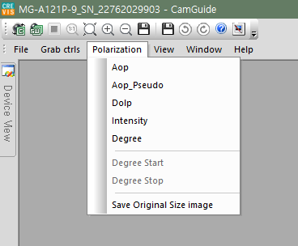
| Item | Setting Value | Description |
|---|---|---|
| Output Format Selector | Intensity(S0) AoP DoLP Degree |
AoP: Outputs the average value of the angle of light incident on the pixel. > Brighter image from 0˚ to 180˚ > Image becomes darker as it goes from 180˚ to 360˚ DolP: How well the polarized light incident on the pixel is polarized without diffuse reflection. The degree of polarization is output as a brightness value. > The better the polarization, the higher the brightness value. Insensity: Outputs the brightness value of incident light Degree: Simultaneous output of images at each angle of 0˚, 45˚, 90˚, 135˚ |
1) AoP: Outputs the average value of the angle of light incident on the sensor, and the DN value changes depending on the angle of the imaged object.
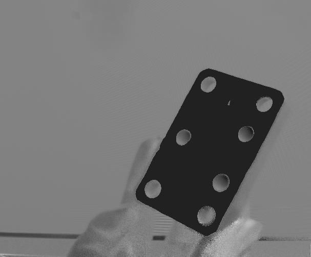
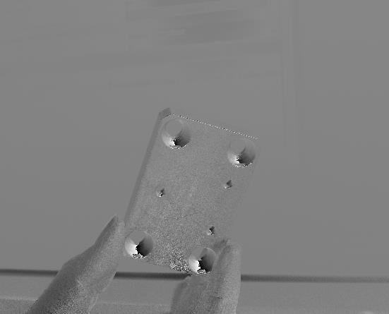
2) DolP: Outputs the degree of polarization of the light incident on the sensor as a brightness value. The more polarized the light, the more saturated the output image.
* Before using polarizing film * After using polarizing film
3) Intensity (S0): Outputs the intensity of light incident on the sensor, which is the same expression method used by existing black and white cameras.
4) Degree: Images for each angle of 0˚, 45˚, 90˚, 135˚ are output simultaneously.
When outputting video using the Degree method, you can acquire and stop the image with Degree Start/Stop.
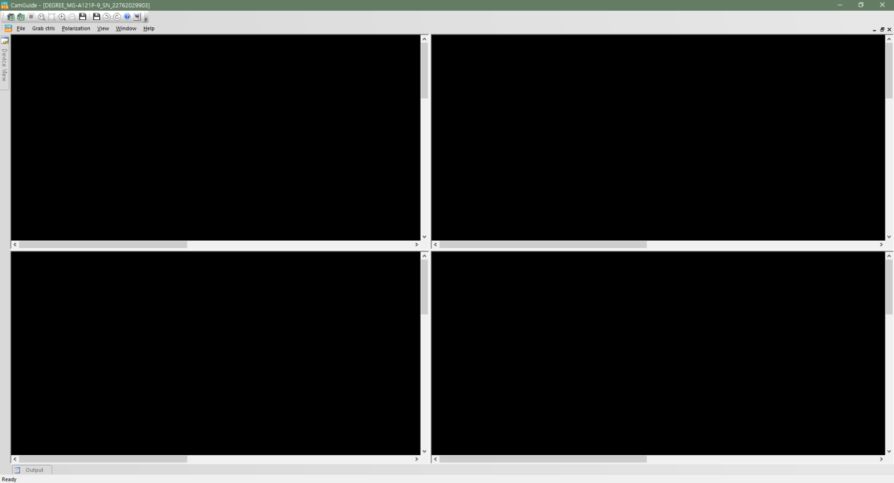
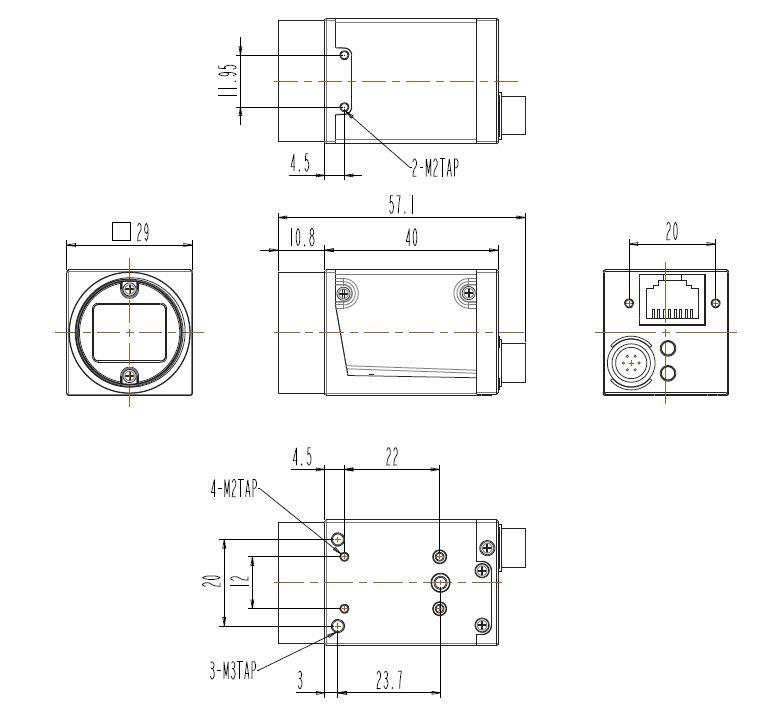
| Category | Feature Name | Type | Access Mode | Description |
|---|---|---|---|---|
| Device Control |
DeviceScanType | Enumeration | RO | Scan type of the sensor. |
| DeviceVendorName | StringReg | RO | Name of the manufacturer of the device. | |
| DeviceModelName | StringReg | RO | Model of the device. | |
| DeviceManufacturerInfo | StringReg | RO | Manufacturer information about the device. | |
| DeviceVersion | StringReg | RO | Version of the device. | |
| DeviceID | StringReg | RO | User-programmable device identifier. | |
| DeviceUserID | StringReg | RW | User-programmable device identifier. | |
| DeviceLinkThroughputLimit | Integer | RW | Limits the maximum bandwidth of the data that will be streamed out By the device on the selected Link.(Unit : Byte per second) |
|
| DeviceFirmwareVersion | StringReg | RO | Device Firmware Version | |
| DeviceTemperatureSelector | Enumeration | RW | Selects the location within the device, where the temperature Will be measured. |
|
| DeviceTemperature | Float | RO | Device temperature in degrees Celsius (C). | |
| TemperatureUpdateFeature | Command | WO | Device Temperature Update Feature. | |
| U3VDeviceCapability | Integer | RO | Describes Device Capability. | |
| UserNameAvailable | Boolean | RO | Set if User Defined Name available. | |
| AccessPrivilegeAvailable | Boolean | RO | Set if Heartbeat/Access Privilege is available. | |
| MessageChannelSupported | Boolean | RO | Set if the device supports a Message Channel. | |
| TimestampSupported | Boolean | RO | Set if the device supports a timestamp register. | |
| StringEncoding | Integer | RO | String Encoding of the BRM. | |
| FamilyRegisterAvailable | Boolean | RO | Set if the device supports the Family Name register. | |
| SBRMSupported | Boolean | RO | Set if the device supports a SBRM. | |
| EndianessRegistersSupporte d |
Boolean | RO | Set if the device supports the Protocol Endianess and Implementation Endianess registers. |
|
| WrittenLengthFieldSupporte d |
Boolean | RO | Set to 1 if the device sends the length_written field in the SCD section of the WriteMemAck command. |
|
| DeviceStatusInfo | Integer | RO | Describes Device Status Information. | |
| DeviceReset | Command | WO | Resets the device to its power up state. | |
| DeviceSleepMode | Enumeration | RW | Controls Sleep Activation. When 'Soft Sleep' activated, the sensors are reset. 'Deep sleep' resets both sensors and the FPGA. When returning to Normal Mode('Disable'), It take several seconds. |
|
| ImageFormat Control |
SensorWidth | IntReg | RO | Effective width of the sensor in pixels. |
| SensorHeight | IntReg | RO | Effective height of the sensor in pixels. | |
| WidthMax | IntReg | RO | Maximum width (in pixels) of the image. The dimension is calculated after horizontal binning, decimation or any other function changing The horizontal dimension of the image. |
|
| HeightMax | IntReg | RO | Maximum height (in pixels) of the image. This dimension is calculated after vertical binning, decimation or any other function changing The vertical dimension of the image. |
|
| Width | Integer | RW | Width of the Image provided by the device (in pixels). | |
| Height | Integer | RW | Height of the image provided by the device(in pixels). | |
| OffsetX | Integer | RW | This value sets the X offset (left offset) for the area of interest in pixels. | |
| OffsetY | Integer | RW | This value sets the Y offset (top offset) for the area of interest in pixels. | |
| SensorShutterMode | Enumeration | RW | Sets the shutter mode of the device. | |
| AdcBitDepth | Enumeration | RW | Selects which Analog to Digital Converter(ADC) output bits from the image sensor. |
| Category | Feature Name | Type | Access Mode | Description |
|---|---|---|---|---|
| PixelFormat | Enumeration | RW | Format of the pixel provided by the device. It represents all the information provided by PixelCoding, PixelSize, PixelColorFilter Combined in a single feature. |
|
| TestPattern | Enumeration | RW | Selects the type of test pattern that is generated by the device as Image source. |
|
| Acquisition Control |
AcquisitionMode | Enumeration | RW | Sets the acquisition mode of the device. It defines mainly the number of Frames to capture during an acquisition and the way the acquisition stops. |
| AcquisitionStart | Command | RW | Starts the Acquisition of the device. The number of frames captured is specified by AcquisitionMode. |
|
| AcquisitionStop | Command | RW | Stops the Acquisition of the device at the end of the current Frame. It is mainly used when AcquisitionMode is Continuous but can be used in any acquisition mode. |
|
| AcquisitionFrameCount | Integer | RW | Number of frames to acquire in MultiFrame Acquisition mode. | |
| TriggerSelector | Enumeration | RW | Selects the type of trigger to configure. | |
| TriggerMode | Enumeration | RW | Controls if the selected trigger is active. | |
| TriggerSoftware | Command | RW | Generates an internal trigger. TriggerSource must be set to Software. | |
| TriggerSource | Enumeration | RW | Specifies the internal signal or physical input Line to use as the trigger Source. The selected trigger must have its TriggerMode set to On. |
|
| TriggerActivation | Enumeration | RO | Specifies the activation mode of the trigger. | |
| TriggerOverlap | Enumeration | RW | Specifies the type trigger overlap permitted with the previous frame. This defines when a valid trigger will be accepted (or latched) for a new frame. |
|
| TriggerDelay | Float | RW | Specifies the delay in microseconds (us) to apply after the trigger reception before activating it. |
|
| TransferDelay | Integer | RW | Specifies the delay to apply after the image readout from sensor before transfer. This can be used as a crude flow-control mechanism if the application or the network infrastructure cannot keep up with the packets coming from the device. |
|
| ExposureMode | Enumeration | RW | Sets the operation mode of the Exposure (or shutter). | |
| ExposureTime | Float | RW | Sets the Exposure time (in microseconds) when ExposureMode is Timed and ExposureAuto is Off. This controls the duration where the Photosensitive cells are exposed to light. |
|
| ExposureAuto | Enumeration | RW | Sets the automatic exposure mode when ExposureMode is Timed. The exact algorithm used to implement this control is device-specific. |
|
| AutoExposureTarget | Integer | RW | When the auto exposure is "once" or "continuous", the the exposure Time will be changed, depending on the target value. |
|
| AutoExposureTimeLowerLim it |
Float | RW | The minimum exposure time abs of Auto Exposure. Not available in Digital gain mode. (Unit : us) |
|
| AutoExposureTimeUpperLim it |
Float | RW | The maximum exposure time abs of Auto Exposure. Not available in Digital gain mode.(Unit : us) |
|
| AutoGainLowerLimit | Float | RW | The minimum gain of Auto Gain Ratio. | |
| AutoGainUpperLimit | Float | RW | The maximum gain of Auto Gain Ratio. | |
| AcquisitionFrameRateEnable | Enumeration | RW | Controls the acquisition rate (in Hertz) at which the frames are captured. |
|
| AcquisitionFrameRate | Float | RW | Controls the acquisition rate (in Hertz) at which the frames are captured. |
|
| ResultingFrameRate | Float | RO | Resulting frame rate (in Hertz) that maximum allowed frame acquisition. | |
| DigitalIO Control |
LineSelector | Enumeration | RW | Selects the physical line (or pin) of the external device connector to Configure. |
| LineDebouncerTime | Float | RW | Line Debouncer Time. Unit : us | |
| LineMode | Enumeration | RO | Controls if the physical Line is used to Input or Output a signal. | |
| LineInverter | Boolean | RW | Controls the invertion of the signal of the selected input or output Line. | |
| LineStatus | Boolean | RO | Returns the current status of the selected input or output Line. | |
| LineStatusUpdateFeature | Command | WO | Line Status Update Feature. | |
| LineSource | Enumeration | RW | Selects which internal acquisition or I/O source signal to output on the Selected Line. LineMode must be Output. |
|
| UserOutputSelector | Enumeration | RW | Selects which bit of the User Output register will be set by serOutputValue. |
|
| UserOutputValue | Boolean | RW | Sets the value of the bit selected by UserOutputSelector. | |
| CounterandTimer Control |
CounterValueReset | Command | RW | Counters are reset immediately. |
| CounterEventSource | Enumeration | RW | Select the events that will be the source to increment the Counter. |
| Category | Feature Name | Type | Access Mode | Description |
|---|---|---|---|---|
| CounterValue | Integer | RO | Reads the current value of the selected Counter. All Counters are reset when forced Counter Value Reset Command. |
|
| CounterUpdateFeature | Command | WO | Counter Update Feature. | |
| TimerSelector | Enumeration | RW | mer to configure. | |
| TimerDuration | Float | RW | Sets the duration (in microseconds) of the Timer pulse. | |
| TimerDelay | Float | RW | Sets the duration of the delay to apply at the reception of a trigger before to start the Timer. |
|
| TimerTriggerSource | Enumeration | RW | Selects the he trigger to start the Timer. | |
| Event Control |
EventSelector | Enumeration | RW | Selects which Event to signal to the host application. |
| EventNotification | Enumeration | RW | Activate or deactivate the notification to the host application of the occurrence of the selected Event. |
|
| Analog Control |
GainSelector | Enumeration | RW | Selects which Gain is controlled by the various Gain features. Do not use both gain at the same time. |
| GainRaw | Integer | RW | Controls the selected gain as an absolute physical value of Sensor. This is an amplification factor applied to the video signal. |
|
| GainAbs | Float | RW | Controls ratio of the selected gain of Sensor. | |
| GainAuto | Enumeration | RW | Sets the automatic gain control (AGC) mode. The exact algorithm used to implement AGC is device-specific. |
|
| BlackLevelSelector | Enumeration | RW | Selects which Black Level is controlled by the various Black Level features. |
|
| BlackLevelRaw | Integer | RW | Controls the analog black level as an absolute physical value of Sensor. This represents a DC offset applied to the video signal. |
|
| BalanceRatioSelector | Enumeration | RW | Selects which Balance ratio to control. | |
| BalanceRatio | Float | RW | Controls ratio of the selected color component to a reference color Component. It is used for white balancing. |
|
| BalanceWhiteAuto | Enumeration | RW | Controls the mode for automatic white balancing between the color Channels. The white balancing ratios are automatically adjusted. |
|
| BalanceUpdateFeature | Command | - | BalanceRatio and BalanceWhiteAuto Update Feature. | |
| GammaEnable | Boolean | RW | Activates the Gamma Correction. Gamma correction cannot be used simultaneously with the LUT. |
|
| Gamma | Float | RW | Controls the gamma correction of pixel intensity. | |
| PatternNoiseRemoval | Command | RW | Pattern Noise Removal Auto. Limited to some products only. | |
| NoiseReductionEnable | Boolean | RW | Noise Reduction Filter. | |
| LUT Control |
LUTEnable | Boolean | RW | Activates the selected LUT. LUT can not be used simultaneously with the Gamma correction. |
| LUTIndex | Integer | RW | Control the index (offset) of the coefficient to access in the selected LUT. |
|
| LUTValue | IntReg | RW | Returns the Value at entry LUTIndex of the LUT selected by LUTSelector | |
| LUTValueAll | Register | RW | Accesses the entire content of the selected LUT in one chunk access | |
| DefectPixel Correction |
DefectFilterEnable | Boolean | RW | Enables or Disables the Defect Pixel Filter. |
| DefectFilterTestMode | Enumeration | RW | Defect Filter Test Mode Select. | |
| DefectPixelReplaceCount | Integer | RW | Defect Pixel Replace Count. | |
| DefectPixelIndex | Integer | RW | Defect Pixel Index. | |
| DefectXCoordinate | Integer | RW | Defect Pixel X Coordinate. | |
| DefectYCoordinate | Integer | RW | Defect Pixel Y Coordinate. | |
| DefectPixelReplaceExecute | Command | RW | Defect Pixel Replace Execute. | |
| FlatField Correction |
FFCEnable | Enumeration | RW | Activate or Deactivate Flat Field Correction Function. |
| BlackCalibration | Command | WO | Black Calibration. | |
| WhiteCalibration | Command | WO | White Calibration. | |
| FFCSaveLoadFlashSelect | Integer | RW | FFC Save Load Flash Select. | |
| FFCSave | Command | RW | FFC Save. | |
| FFCLoad | Command | RW | FFC Load. |
| Category | Feature Name | Type | Access Mode | Description |
|---|---|---|---|---|
| TransportLayer Control |
FIDonPixelMode | Enumeration | RW | Some Pixels are replaced with Frame ID(FID). The FID value starts from the coordinates of Pixel(0,0) and the counter begins from 0. Limited to some products only. |
| LowLatencyEnable | Boolean | RW | Minimize image transfer latency for fastest mode. | |
| SITransferSize | Integer | RW | This Parameter contains the size of regular payload bulk transfers.("equally sized transfers") |
|
| PayloadSize | Integer | RO | Provides the number of bytes transferred for each image or chunk on the stream channel. This includes any end-of-line, end-of-frame statistics or other stamp data. This is the total size of data payload for a data block. |
|
| PayloadTransferSize | Integer | RO | This Parameter contains the size of regular payload bulk transfers. | |
| PayloadTransferCount | Integer | RO | This Parameter constains the number of regular payload data bulk transfers. |
|
| PayloadFinalTransfer1Size | Integer | RO | This Parameter constains the size of the Final Transfer 1 payload bulk transfer. |
|
| PayloadFinalTransfer2Size | Integer | RO | This Parameter constains the size of the Final Transfer 2 payload bulk transfer. |
|
| GenCPVersionMajor | Integer | RO | Major version of the specification. | |
| GenCPVersionMinor | Integer | RO | Minor version of the specification. | |
| U3VMaxDeviceResponseTim e |
Integer | RO | Max Resonse Time in ms. | |
| U3VMessageChannelID | Integer | RW | Channel ID Used For The Message Channel. | |
| U3VVersionMajor | Integer | RO | U3V Version. | |
| U3VVersionMinor | Integer | RO | U3V Version. | |
| U3VCPCapability | Integer | RO | Indicates additional features on the control channel. | |
| U3VCPSIRMAvailable | Boolean | RO | Set if the device supports at least one device streaming interface. | |
| U3VCPEIRMAvailable | Boolean | RO | Set if the device supports at least one device event interface. | |
| U3VCPIIDC2Available | Boolean | RO | Set if the device supports IIDC2 register map. | |
| U3VMaxCommandTransferL ength |
Integer | RW | Specifies the max suuported command transfer length of the device. | |
| U3VMaxAcknowledgeTransf erLength |
Integer | RO | Specifies the max suuported ack transfer length of the device. | |
| U3VNumberOfStreamChann els |
Integer | RO | Number of Stream Channels and its Corresponding Streaming Interface Register Maps. |
|
| U3VCurrentSpeed | Enumeration | RO | Specifies the current speed of the USB link. | |
| UserSet Control |
UserSetSelector | Enumeration | RW | Selects the feature User Set to load, save or configure. |
| UserSetLoad | Command | RW | Loads the User Set specified by UserSetSelector to the device and makes it active. |
|
| UserSetSave | Command | RW | Save the User Set specified by UserSetSelector to the non-volatile memory of the device. |
UserSetSave Command RW Save the User Set specified by UserSetSelector to the non-volatile memory of the device.
* For detailed explanation, refer to CamGuide manual.
Tel : +82-31-899-4503
+82-31-899-4504
+82-31-899-4507
Fax : +82-31-899-4509
sh_lee@crevis.co.kr
dkahn@crevis.co.kr
mysung@crevis.co.kr
Tel : +82-31-899-4567
tjmoon@crevis.co.kr
29-4, Gigok-ro, Giheung-gu, Yongin-si, Gyeonggi-do, Korea
www.crevis.co.kr
| Revision | Date | Changes | Remark |
|---|---|---|---|
| 0.1 | 2020.5 | Draft Version Issued |